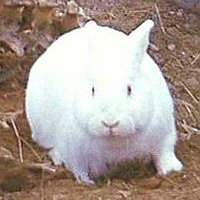

welcome, gentle sir knight, welcome to hethrael.
it’s not a very good page, is it?
but it is nice and it shall attend to your every need.
i am lithis. just lithis.
—shamelessly mutilated from monty python and the holy grail.
:)=">
>:)=
that’s no ordinary rabbit! it’s the most foul, cruel, bad-tempered
rodent you ever set eyes on!
—also shamelessly taken from the holy grail.
ok, if you haven’t gotten the hint yet, i love monty python and the holy grail. i think it’s the greatest movie ever. i also like flying circus and their other movies. if you haven’t seen the holy grail yet, i recommend you see it. you might not like it, but i do, and it would make me feel better if you saw it.
i loved the view source command and you should have, too.
obviously, the holy grail snippets above aren’t
copyrighted by me... just watch the darn movie!
copyright lithis, 1999–2005.